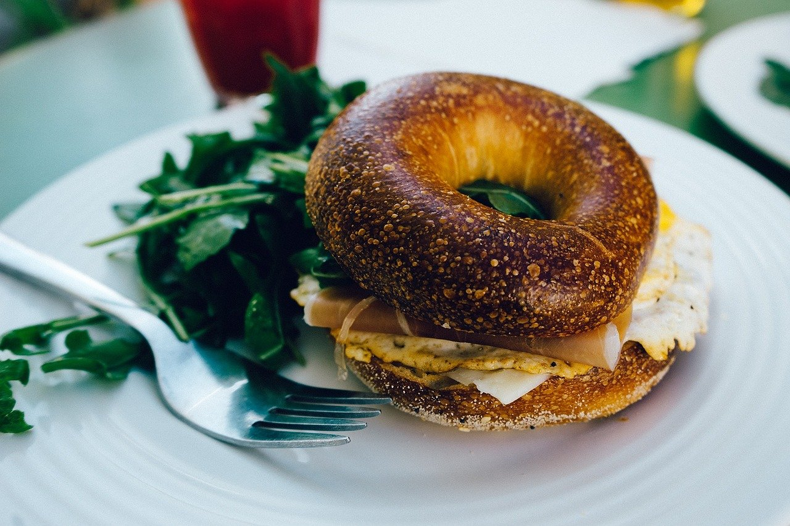
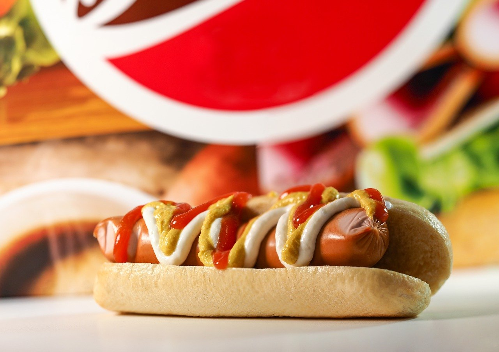
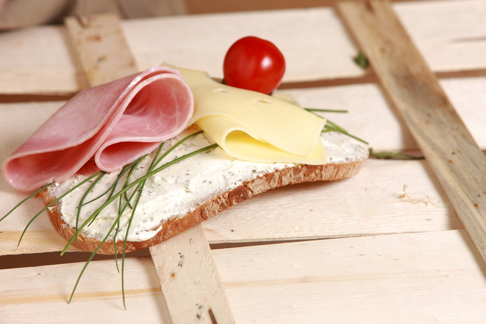
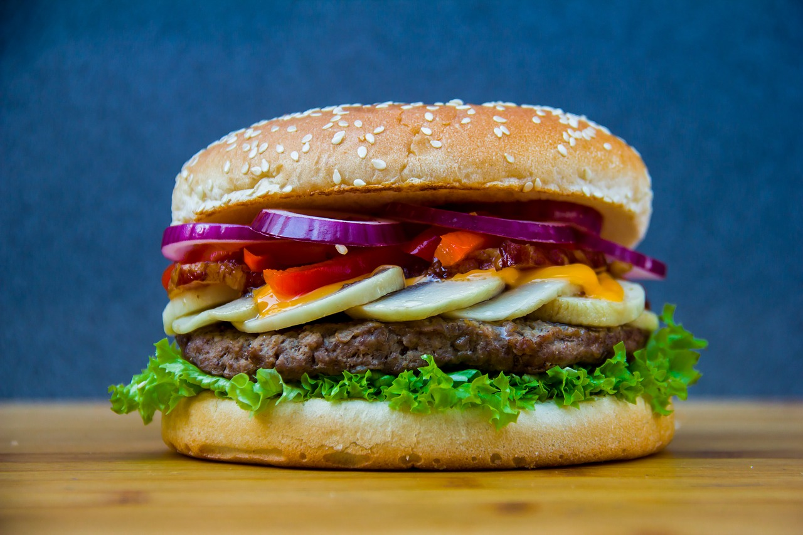
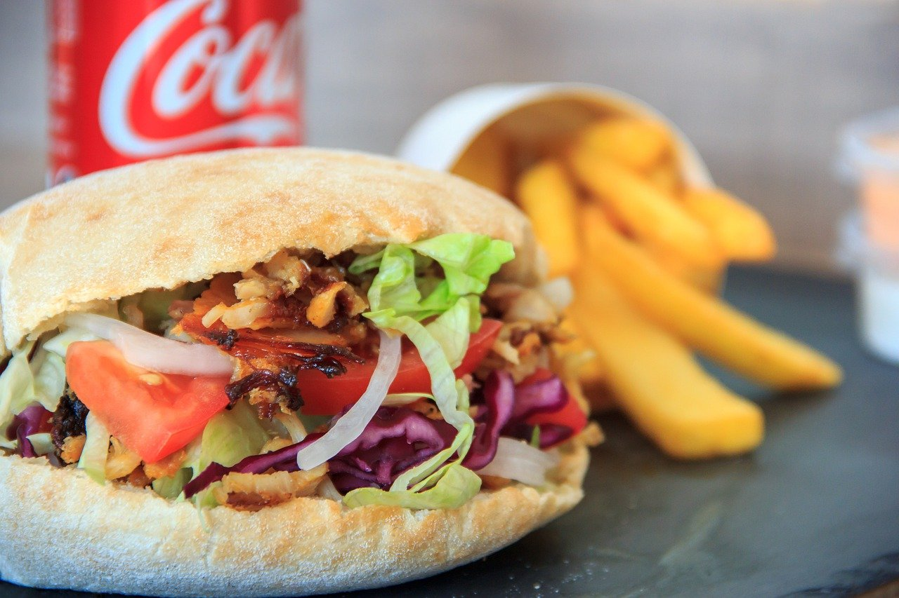
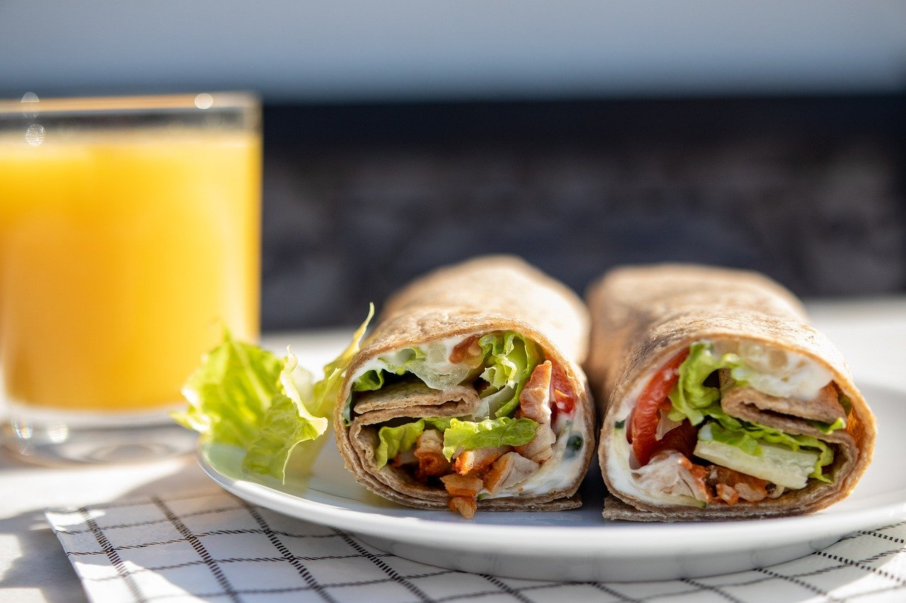

Blissful Bagel Sandwich
64 people like this sandwich.
A holy sandwich
♦️ 20 min
♦️ 2 serving(s)
♦️ 800 cal

Hopeful Hotdog Sandwich
10 people like this sandwich.
It really wants to be a sandwich. Please don't hurt its feeling.
♦️ 10 min
♦️ 1 serving(s)
♦️ 1400 cal

Outspoken Open Sandwich
27 people like this sandwich.
This sandwich is very honest. Do not try to eat it upside down.
♦️ 5 min
♦️ 0.5 serving(s)
♦️ 160 cal

Better Burger Sandwich
102 people like this sandwich.
It's not the best, but it's better.
♦️ 15 min
♦️ 2 serving(s)
♦️ 1400 cal

Potential Pita Sandwich
0 people like this sandwich.
This could potentially be a sandwich, if you choose to make it.
♦️ 10 min
♦️ 1 serving(s)
♦️ 500 cal

Relatable Wrap Sandwich
44 people like this sandwich.
This sandwich has imposter syndrome.
♦️ 10 min
♦️ 1 serving(s)
♦️ 400 cal